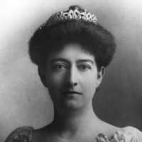

Primeros avances educativos y profesionales (1889-1906)
Durante el Porfiriato, las mujeres comenzaron a acceder gradualmente a la educación superior. En 1889, María Sandoval se convirtió en la primera abogada mexicana. Asimismo, intelectuales como Laureana Wright promovieron el desarrollo cultural femenino y defendieron la igualdad de derechos mediante publicaciones y revistas feministas.
A principios del siglo XX surgieron organizaciones femeninas que defendían la educación, la participación social y mejores condiciones laborales. En 1906, el Partido Liberal Mexicano propuso la remuneración del trabajo doméstico, una demanda innovadora para la época.
